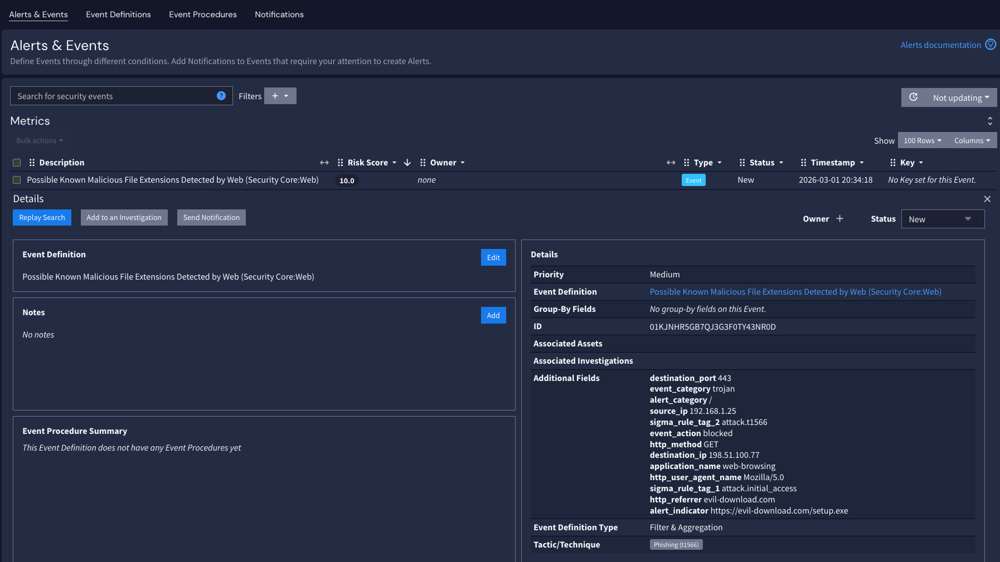
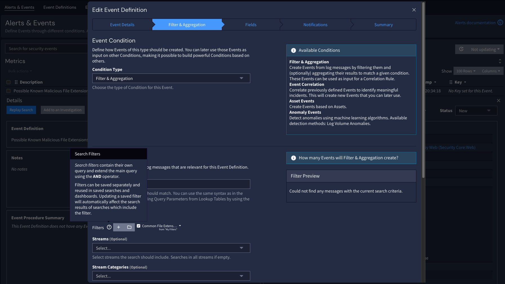
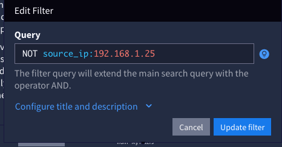

To remove false positives from future alert runs, the recommended approach in Graylog is to apply a search filter with your exclusion criteria.
As an example, in this case, an alert was triggered for possible malicious file extensions detected by a web filter on the IP address "192.168.1.25"; after investigation, it was deemed a false positive. To apply an exclusion to this IP address, click the edit button next to the event definition.

Within the event definition, a new search filter can be added.

In the filter, we can either put "NOT source_ip:192.168.1.25" or just "source_ip:192.168.1.25" and negate the filter. Once the filter is applied and the definition is saved, future alerts from this IP will be excluded.
